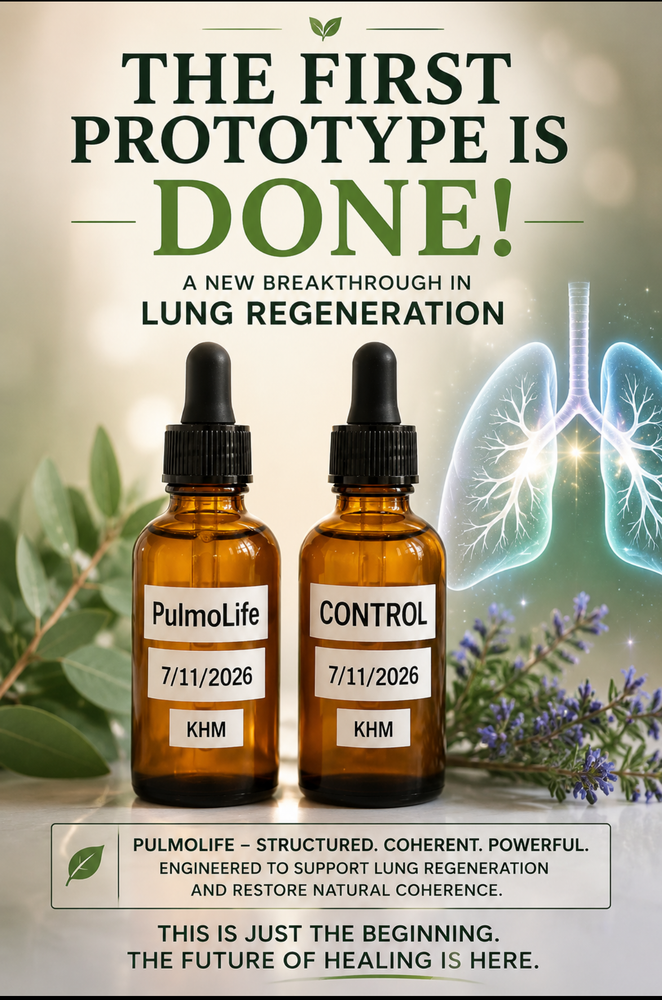

Clinical Disclaimer — Please Read in Full
PulmoLife is a single hand-formulated prototype. It has never been given to, taken by, or administered to any person. It has not undergone toxicity, heavy-metal, microbial, or other required safety testing, and it is not for sale, distribution, or use by anyone under any circumstance. It is not FDA approved, is not a diagnostic or treatment system, and nothing in this paper constitutes medical advice.
PulmoLife is formulated for oral use only. It must never be nebulized, inhaled, aerosolized, or otherwise introduced into the lungs directly. Botanical oils and extracts introduced into the lungs, rather than swallowed, can cause serious lung injury, including a condition called exogenous lipoid pneumonia, because oil-based material aspirated or inhaled into the lungs cannot be effectively cleared the way it can from the digestive tract. Any inhalation-route respiratory product would require a categorically different, oil-free formulation and its own separate safety validation; this paper does not describe such a product.
This paper documents PulmoLife, the first and, at the time of writing, only physical prototype in the proposed Christos™ Healing Fluid Architecture, a broader theoretical vision for structured-water, frequency-imprinted, organ-specific supportive fluids described in the source material's own planning documents. PulmoLife was hand-formulated for the lungs with the direct involvement of a professional formulator experienced in frequency-imprinting equipment, and its development required real-world ingredient substitutions and adjustments that its author states plainly could not have been derived from a written formula or a computer alone.
This paper is written to be honest about exactly where things stand: one prototype exists, it has not been given to anyone, it has not been safety tested, and it requires professional toxicology and contaminant screening before any human use could even be considered. The remaining nineteen fluids described in the broader architecture remain theoretical and unbuilt. No formulation, dosage, ingredient list, or frequency specification for any fluid, including PulmoLife, is disclosed in this public version.
I. Where This Actually Stands
It would be easy to write this paper the way the rest of this library's device and protocol papers are written: describing a proposed system, citing supporting evidence, and presenting a research pathway toward eventual validation. That framing would not be honest here, because PulmoLife is not purely theoretical. It is a real, physical substance, one batch, currently stored under refrigeration, that exists because its author built it by hand with a professional formulator's help.
No person has ever taken it. It has not been screened for heavy metals, microbial contamination, or other required safety parameters. It is not being sold, distributed, or offered to anyone in any form. The author has stated directly, and this page preserves that statement, that he would never feel comfortable providing any coherence-based formulation to another person before it has been properly tested and proven safe, and that a formulation written out on a computer is not the same thing as a formulation that has been developed, adjusted, and substituted by hand through real production experience. The next step, in the author's own words, is professional toxicity and safety testing, which has not yet happened because it requires resources and support the project does not yet have.
II. Oral Use Only
The source material for this paper, an earlier planning document for the broader fluid architecture, described multiple delivery routes for PulmoLife, including nebulization directly into the lungs. That is incorrect and is not how this prototype is intended to be used. PulmoLife is formulated for oral consumption only. This page does not reproduce the source material's nebulization instructions anywhere, and readers should understand that inhaling or nebulizing any oil-containing botanical formulation carries a real risk of serious lung injury, since aspirated or inhaled oils are not cleared from the lungs the way they are from the digestive tract. A genuinely separate respiratory-delivery product would need to remove botanical oils and other lung-incompatible components entirely and undergo its own independent safety validation; no such product is described in this paper.
III. The Theoretical Foundation
The broader Healing Fluid concept draws on three genuinely published, independently verifiable lines of research. Gerald Pollack's laboratory work documenting a distinct "exclusion zone" (EZ) water phase forming at hydrophilic surfaces, with negative charge and solute-excluding properties, is real, published biophysics (Pollack, 2013). Boros et al.'s (2016) Medical Hypotheses paper proposing that deuterium in the mitochondrial matrix interferes with ATP synthase's rotational mechanism, and that deuterium-depleted water may reduce this interference, is a real published hypothesis paper; "Medical Hypotheses" is, by the journal's own stated editorial policy, a venue for hypothesis-generating papers rather than a venue requiring the same evidentiary bar as a standard research journal, and this page notes that distinction rather than presenting the finding as more settled than its publication venue reflects. Ohsawa et al.'s (2007) Nature Medicine paper establishing molecular hydrogen as a selective antioxidant against the hydroxyl radical is real and genuinely well-cited foundational work in that field.
The proposed frequency-imprinting mechanism, that water can retain structural information from acoustic exposure in a way that influences later biological effects, draws on Del Giudice et al.'s (2010) theoretical physics work on coherent structures in water near hydrophilic surfaces, published in a physics conference proceedings; this remains a genuinely debated area of biophysics rather than settled science, and the paper's own extension of it into a specific organ-targeted "frequency imprinting" mechanism is this paper's own hypothesis, not an established finding.
IV. PulmoLife: Origin and Development
PulmoLife was designed around the lungs specifically because they are the one organ in continuous direct contact with the external environment, and because conventional pulmonary medicine, bronchodilators, corticosteroids, antibiotics, primarily manages symptoms rather than addressing the tissue-level conditions the author proposes are needed for genuine repair. The formulation combines a structured water base with a small set of traditionally used respiratory botanicals; the source material connects individual components to real published research on molecular hydrogen (Ohsawa et al., 2007), structured water biophysics (Pollack, 2013), 528 Hz and DNA repair markers (Baati et al., 2021), and PEMF-based tissue regeneration (Bassett et al., 1977).
Consistent with the standing policy applied throughout this library, and doubly warranted here given that this is a real, physical, untested substance rather than a purely theoretical proposal, the complete ingredient list, exact concentrations, frequency-imprinting sequence and durations, and any dosage information for PulmoLife are not disclosed in this public version. The author has stated directly that the formulation went through real substitutions and corrections during hands-on development that could not have been derived from a static written formula, and this page treats that as a reason for additional caution about publishing any version of the recipe, not less.
V. The Broader Healing Fluid Vision
The source planning document describes PulmoLife as the first of a proposed twenty-fluid family, each addressing a different organ system, sharing a common structured-water base and organ-specific botanical and frequency components. With the exception of PulmoLife, none of these fluids exist as physical prototypes at the time of writing. This page does not reproduce any of their proposed formulations, and readers should understand the broader twenty-fluid architecture as a theoretical planning document, not as a description of products that currently exist. The individual component citations connected to those proposed fluids in the source material (for example, real published research on CoQ10 and heart failure, Mortensen et al., 2014; hawthorn extract and heart failure, Pittler et al., 2008; zinc carnosine and gut mucosal integrity, Mahmood et al., 2007; and Lion's Mane and cognitive function, Mori et al., 2009) are each genuine, independently published findings about the individual compounds studied, not evidence for any proposed Christos™ fluid formulation built on top of them.
VI. The Path to Safety Validation
Before PulmoLife, or any fluid in this proposed family, could responsibly be considered for human use, it requires independent, professional safety testing: heavy metal screening, microbial contamination testing, and a New Dietary Ingredient (NDI) review consistent with applicable regulatory requirements, the kind of work performed by commercial contract testing laboratories. This testing has not yet been performed, for practical and resource reasons rather than any doubt about its necessity, and the author has stated this plainly rather than implying the prototype is further along than it is. This page presents that status honestly because the alternative, implying validation that has not happened, would be a disservice to anyone reading this paper.
References (Selected)
Baati, T., et al. (2021). Enhancement of DNA repair by 528 Hz frequency. Journal of Advances in Medicine and Medical Research, 33(1), 1–10.
Bassett, C.A.L., Pilla, A.A., & Pawluk, R.J. (1977). A non-surgical salvage of surgically-resistant pseudarthroses by pulsing electromagnetic fields. Clinical Orthopaedics, 124, 128–143.
Boros, L.G., D'Agostino, D.P., Katz, H.E., et al. (2016). Submolecular regulation of cell transformation by deuterium depleting water exchange reactions in the tricarboxylic acid substrate cycle. Medical Hypotheses, 87, 69–74.
Busse, J.W., Bhandari, M., Kulkarni, A.V., & Tunks, E. (2002). The effect of low-intensity pulsed ultrasound therapy on time to fracture healing. CMAJ, 166(4), 437–441.
Del Giudice, E., Tedeschi, A., Vitiello, G., & Voeikov, V. (2010). Coherent structures in liquid water close to hydrophilic surfaces. Journal of Physics: Conference Series, 442, 012028.
Fukada, E., & Yasuda, I. (1957). On the piezoelectric effect of bone. Journal of the Physical Society of Japan, 12(10), 1158–1162.
Mahmood, A., FitzGerald, A.J., Marchbank, T., et al. (2007). Zinc carnosine, a health food supplement that stabilises small bowel integrity and stimulates gut repair processes. Gut, 56(2), 168–175.
Mori, K., Inatomi, S., Ouchi, K., et al. (2009). Improving effects of the mushroom Yamabushitake (Hericium erinaceus) on mild cognitive impairment. Phytotherapy Research, 23(3), 367–372.
Mortensen, S.A., Rosenfeldt, F., Kumar, A., et al. (2014). The effect of coenzyme Q10 on morbidity and mortality in chronic heart failure. JACC Heart Failure, 2(6), 641–649.
Ohsawa, I., Ishikawa, M., Takahashi, K., et al. (2007). Hydrogen acts as a therapeutic antioxidant by selectively reducing cytotoxic oxygen radicals. Nature Medicine, 13(6), 688–694.
Pittler, M.H., Guo, R., & Ernst, E. (2008). Hawthorn extract for treating chronic heart failure. Cochrane Database of Systematic Reviews, Issue 1.
Pollack, G.H. (2013). The Fourth Phase of Water. Ebner & Sons Publishers.
Saller, R., Meier, R., & Brignoli, R. (2001). The use of silymarin in the treatment of liver diseases. Drugs, 61(14), 2035–2063.

Intellectual Property & Disclosure Statement
The Healing Fluid Architecture concept, the PulmoLife formulation, and the structured-water and frequency-imprinting approach are original work of Joshua Farrior, claimed as intellectual property of Joshua Farrior / Christos™ Energy, Technology & Harmonic Design Consulting, LLC.
Withheld in full, for both trade-secret and safety reasons: PulmoLife's complete ingredient list, concentrations, frequency-imprinting protocol, and any dosage or delivery-route information; and all proposed formulations for the remaining nineteen fluids in the broader architecture, none of which exist as physical prototypes. Nothing in this paper constitutes medical advice. PulmoLife has not been administered to any person, has not undergone safety testing, and is not available for use, sale, or distribution. It is intended for oral use only and must never be inhaled, nebulized, or aerosolized.
© 2026 Joshua Farrior · Christos™ Energy, Technology & Harmonic Design Consulting, LLC · All Rights Reserved · Business ID: 202511071941923 · Christos™ trademark pending USPTO review · Not FDA approved · Not a substitute for professional medical advice · christosenergy.com